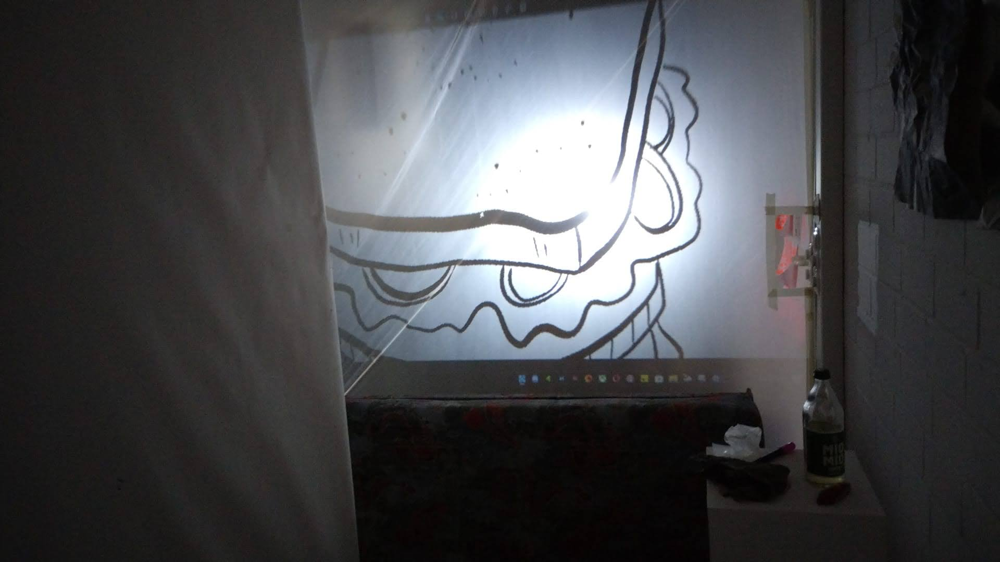

|
|
"Sleeping Uncle"
Physical Building
Das Projekt Mad Uncle war eine Herausforderung für uns alle, wir mussten über unseren eigenen Schatten springen und uns mit Problemen befassen, welche wir zuvor nicht kalkuliert haben.
Es ging darum eine Raumsituation zu schaffen, in der man als Besucher, spielerisch Teil einer Installation wird.
Diesen Raum so zu gestalten, dass man eine Art Labyrinth schafft, stellte sich als Hürde da, auf Grund dessen, dass wir zunächst einen passenden Raum finden mussten.
Wir entschieden uns, den Atelier-Vorraum zu nutzen und begannen damit, ein Raster auszulegen an welchem wir uns weiter orientierten.
Das gesammte Projekt sollte möglichst lebendig wirken. Des Spielers Aufgabe sollte es werden eine Art Parkour zu absolvieren dessen Ziel es ist, ein Sandwich von einem schlafenden, Onkel-Monster zu stehlen.
Aber wie bekommen wir eine Monster in diesen Raum? Wie soll ein Sandwich geklaut werden? Wie bekommt man das Monster dazu, auf den Spieler zu reagieren? Und wie bauen wir überhaupt so ein Spielfeld auf?
Bevor wir uns wirklich mit diesen Fragen auseinander setzen konnten, stellte sich uns jedoch ein völlig anderes Problem.
Es stellte sich heraus, dass wir den von Anfang an benutzten Raum Brandschutztechnisch garnicht nutzen konnten.
Wo bekommen wir jetzt auf die schnelle einen neuen Raum in der richtigen Größe her?
Innerhalb eines Tages schufen wir einen Raum im Raum.
Aus unserem Atelier wurde kurzer Hand eine Installation. Die Fläche von 4,5m x 3,5m welche der alte Raum maß, grenzten wir mit Hilfe von Malerplane, Stellwänden und einer Menge Crepband ab.
Ein positiver Nebeneffekt dieser mühseeligen Arbeit war allerdings, dass wir die gesammte Fläche damit bereits durchstrukturiert haben und bereits wie ein Labyrinth stand.
Diese Hürde bewältigt, widmeten wir uns den anderen Problemen.
Um das Monster zum Teil der Installation zu machen, projezieren wir von hinten auf eine Plane, sodass der Beamer selbst außerhalb der Installation steht, um zu verhindern, dass Spieler den Projektionsweg durchschreiten und Teile der Projektion verdecken. Das ganze nennt sich "Backprojection".

Für eine Interaktive Gestaltung entwickelten wir eine Art Druckplatte, diese wird an 12 Stellen im Labyrinth im Boden installiert, jede Platte triggert eine Reaktion des Monster, bzw. Sleeping Uncle.
Die Platten bestehen aus Pappkarton, bezogen mit einer Schicht Alluminium, jeweils 2 bezogene KartonPlatten werden durch ein Lochpapier getrennt, um möglichst wenig Bewegung zuzulassen, jedoch genug Abstand zu schaffen, als dass die Platten auch nur unter Belastung einen Kontakt schließen.
Letzte Hürde war es ein klaubares Sandwich zu schaffen, welches der Spieler sich erschleichen muss. Das Sandwich selber konstruierten wir aus Pappkarton, dieses wurde auf einen Sockel montiert.
In zwischen dieser beiden Komponennten befindet sich ein in Vinyl eingelassener Druckknopf. Im Prinzip ist es also eher ein Buzzer geworden, als ein tatsichlich klaubares Sandwich.
Die Druckplatten, als auch der Sandwichbuzzer sind als Input an einen Arduino angeschlossen, welcher mit einem Computer vorbunden ist.
An diesem Computer hängt ein Beamer, welcher die Outpureaktionen als Backprojection in die Installation bringt.
|